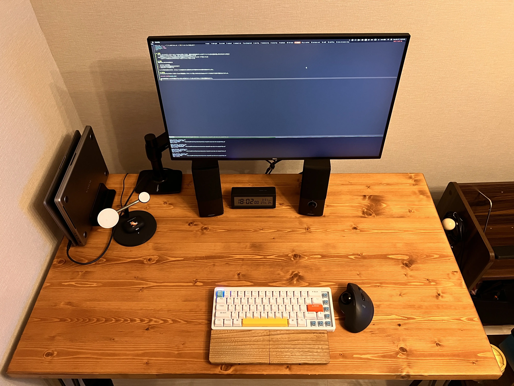
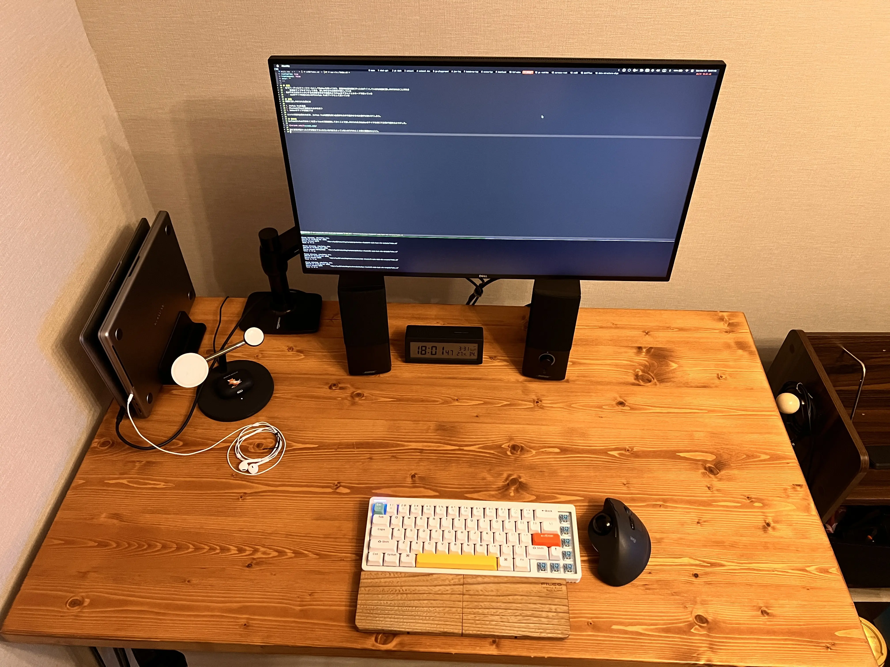

クラムシェルでMacを使っているとき用のマイクとしてEarPodsを買った

目次
前提⌗
- 社でバーチャルオフィスツールとしてGatherを使っており、就業中は基本的にずっとログインしているため急に話しかけられることがある
- 普段はマイクをオフにしておき、話しかけられた時だけONにしている
- 机ができるだけスッキリするのが好きなので画像のようにMacをクラムシェルモードで使っている
- Macのマイクは使えないのでAirPods Proをマイクとして使っている

課題⌗
同僚に話しかけられた時には
- AirPods Proを装着
- BluetoothでMacに接続されるのを待つ
- GatherのマイクをONにする
という手順が必要なのだが、AirPods Proの接続を待つ必要があるので話かけられた相手を待たせてしまう。(話しかけられてから話せるようになるまでだいたい5秒くらい)
解決策⌗
EarPods(AirPodsではなく)を買ってMacに常時接続しておくことで話しかけられたらGatherのマイクをONにするだけで話せるようにした。
これにより話しかけられてから1秒弱くらいで話せる状態にできるようになった。

特に音質が悪かったり声が聞きずらいみたいなFBはもらっていないので今のところ特に問題はなさそう。
Read other posts